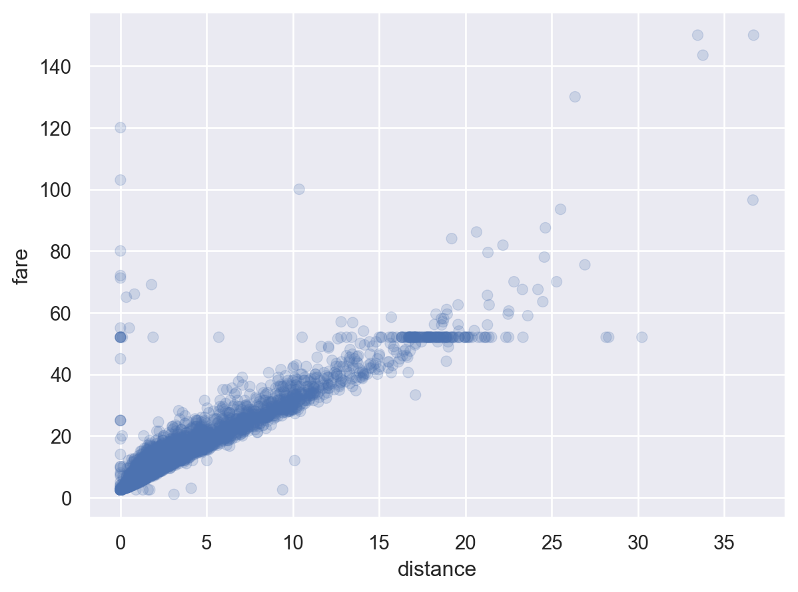
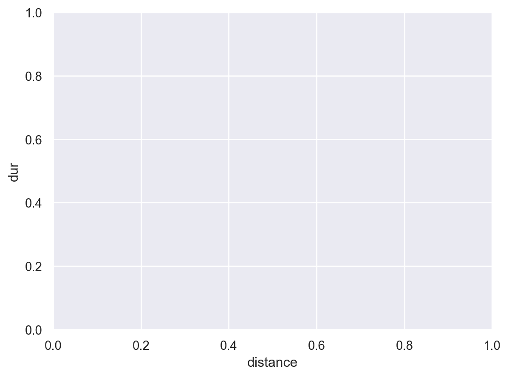
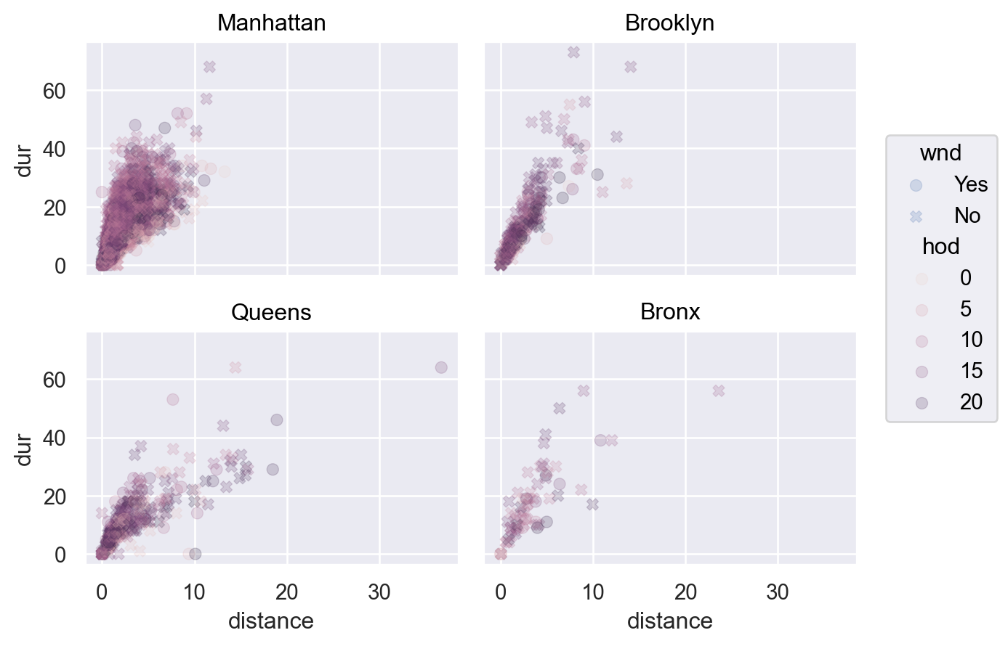
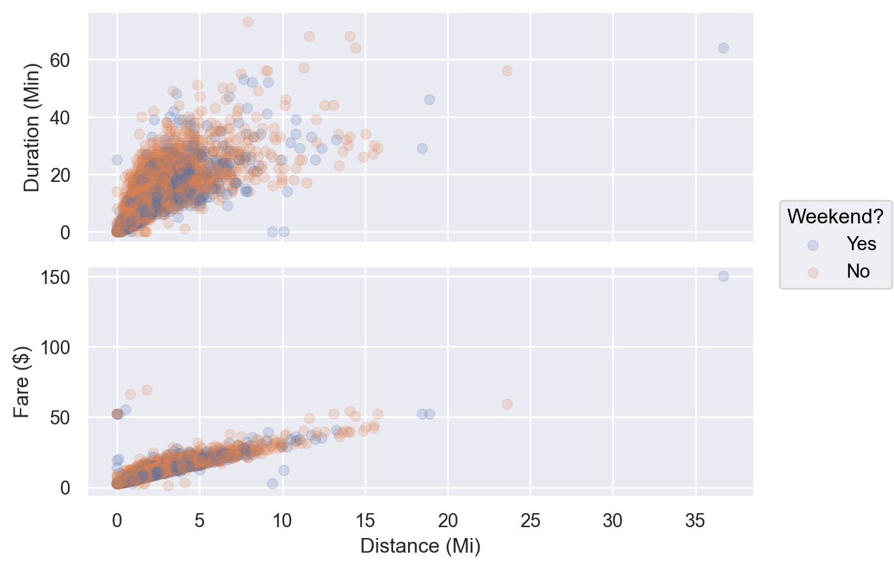
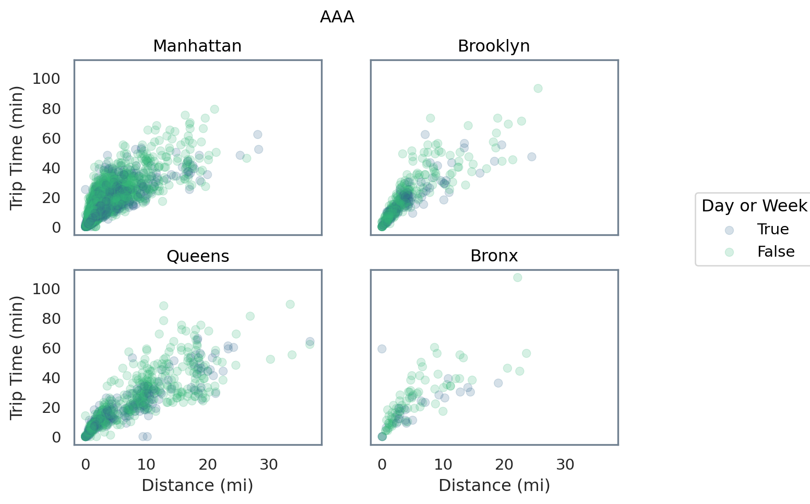
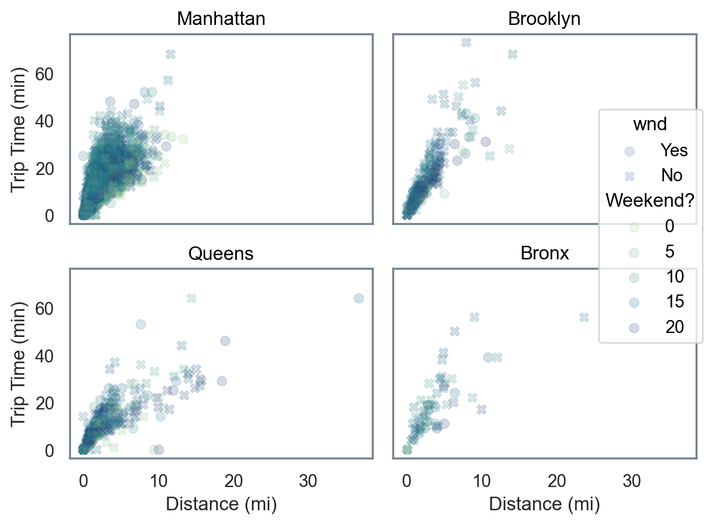
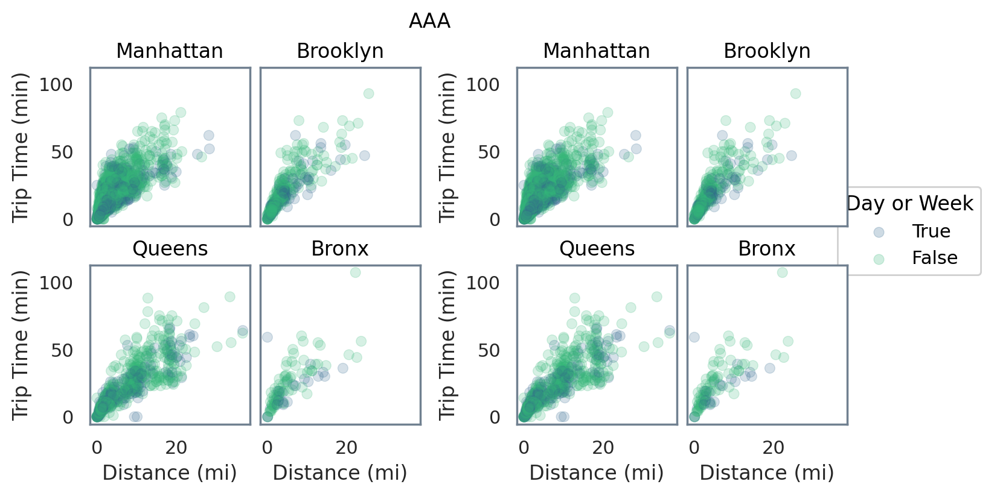

import seaborn as sns
import seaborn.objects as so
seaborn documentationRecently, I’ve written about python tools and packages that have the most similar ergonomics to what R users might expect. This post continues that general overview and polars deep dive with a focus on the visualization layer.
Even R’s most ardent critics often have to admit that ggplot2 is a thing of beauty. It’s approach to encoding graphical choices has influenced countless packges in other languages. In September 2022, python’s highly popular seaborn package joined the club by introducing it’s objects interface which describes itself as:
The interface aims to provide a more declarative, composable, and extensible API for making statistical graphics. It is inspired by Wilkinson’s grammar of graphics, offering a Pythonic API that is informed by the design of libraries such as
ggplot2andvega-litealong with lessons from the past 10 years ofseaborn’s development.
seaborn.objects, then, seems to promise a “best of both worlds”: a truly pythonic approach1 that should easily extend and integrate with python-native workflows while introducing the usability and intuition of ggplot2. This post explores the extent to which that promise holds true and how well seaborn.objects captures the ergonomics of ggplot2.
Warning
As-of writing, seaborn.objects is still flagged as experimental in the documentation.
What are ggplot2’s ergonomics?
To claim that seaborn.objects has a similar aesthetic and user experience as ggplot2, we can consider what has given ggplot2 such staying power. Fortunately, the underlying philosophy of the grammar of graphics is well explored, including in Hadley Wickham’s paper and the ggplot2 book (currently a work-in-progress 3rd edition). Key features include:
- “An underlying grammar that allows you to compose graphs by combining independent components”
- A layered approach to constructing that grammar that supports composable, iterative development
- A rich set of capabilities to control each set of components (layers, scales, coordinate systems, facets, themes, labels) with reasonable defaults should you chose not to
While these two features may seem esoteric, what they afford a sweet-spot level of abstraction. Unlike a d3 or matplotlib, users do not need to articulate specifically how a plot should be built; however, they remain in control of any aspect they want to control, unlike many BI tools or the original seaborn set of preconfigured plot options (e.g. separate cookiecutter functions for boxplot, barplot, swarmplot, etc. which limits flexibility and increases the surface area of what must be learned).
So, with that, we will import seaborn.objects and get started!
This document was made with seaborn version 0.13.1.
But first - data
import polars as pl
import polars.selectors as cs
df_pd = sns.load_dataset('taxis')
df = pl.from_pandas(df_pd)
df.head()
shape: (5, 14)
| pickup | dropoff | passengers | distance | fare | tip | tolls | total | color | payment | pickup_zone | dropoff_zone | pickup_borough | dropoff_borough |
|---|---|---|---|---|---|---|---|---|---|---|---|---|---|
| datetime[ns] | datetime[ns] | i64 | f64 | f64 | f64 | f64 | f64 | str | str | str | str | str | str |
| 2019-03-23 20:21:09 | 2019-03-23 20:27:24 | 1 | 1.6 | 7.0 | 2.15 | 0.0 | 12.95 | "yellow" | "credit card" | "Lenox Hill Wes… | "UN/Turtle Bay … | "Manhattan" | "Manhattan" |
| 2019-03-04 16:11:55 | 2019-03-04 16:19:00 | 1 | 0.79 | 5.0 | 0.0 | 0.0 | 9.3 | "yellow" | "cash" | "Upper West Sid… | "Upper West Sid… | "Manhattan" | "Manhattan" |
| 2019-03-27 17:53:01 | 2019-03-27 18:00:25 | 1 | 1.37 | 7.5 | 2.36 | 0.0 | 14.16 | "yellow" | "credit card" | "Alphabet City" | "West Village" | "Manhattan" | "Manhattan" |
| 2019-03-10 01:23:59 | 2019-03-10 01:49:51 | 1 | 7.7 | 27.0 | 6.15 | 0.0 | 36.95 | "yellow" | "credit card" | "Hudson Sq" | "Yorkville West… | "Manhattan" | "Manhattan" |
| 2019-03-30 13:27:42 | 2019-03-30 13:37:14 | 3 | 2.16 | 9.0 | 1.1 | 0.0 | 13.4 | "yellow" | "credit card" | "Midtown East" | "Yorkville West… | "Manhattan" | "Manhattan" |
df_trips = (
df
.with_columns(
date = pl.col('pickup').cast(pl.Date),
dow = pl.col('pickup').dt.weekday(),
hod = pl.col('pickup').dt.hour(),
duration = (pl.col('dropoff') - pl.col('pickup')).dt.minutes()
)
.with_columns(
cs.by_name('pickup','dropoff').cast(pl.Date).prefix('dt_'),
wnd = pl.when( pl.col('dow') > 5).then(True).otherwise(False)
)
)
df_trips.head()C:\Users\emily\AppData\Local\Temp\ipykernel_17628\3217665268.py:7: DeprecationWarning: `minutes` is deprecated. It has been renamed to `total_minutes`.
duration = (pl.col('dropoff') - pl.col('pickup')).dt.minutes()
C:\Users\emily\AppData\Local\Temp\ipykernel_17628\3217665268.py:10: DeprecationWarning: `prefix` is deprecated. It has been moved to `name.prefix`.
cs.by_name('pickup','dropoff').cast(pl.Date).prefix('dt_'),
shape: (5, 21)
| pickup | dropoff | passengers | distance | fare | tip | tolls | total | color | payment | pickup_zone | dropoff_zone | pickup_borough | dropoff_borough | date | dow | hod | duration | dt_pickup | dt_dropoff | wnd |
|---|---|---|---|---|---|---|---|---|---|---|---|---|---|---|---|---|---|---|---|---|
| datetime[ns] | datetime[ns] | i64 | f64 | f64 | f64 | f64 | f64 | str | str | str | str | str | str | date | i8 | i8 | i64 | date | date | bool |
| 2019-03-23 20:21:09 | 2019-03-23 20:27:24 | 1 | 1.6 | 7.0 | 2.15 | 0.0 | 12.95 | "yellow" | "credit card" | "Lenox Hill Wes… | "UN/Turtle Bay … | "Manhattan" | "Manhattan" | 2019-03-23 | 6 | 20 | 6 | 2019-03-23 | 2019-03-23 | true |
| 2019-03-04 16:11:55 | 2019-03-04 16:19:00 | 1 | 0.79 | 5.0 | 0.0 | 0.0 | 9.3 | "yellow" | "cash" | "Upper West Sid… | "Upper West Sid… | "Manhattan" | "Manhattan" | 2019-03-04 | 1 | 16 | 7 | 2019-03-04 | 2019-03-04 | false |
| 2019-03-27 17:53:01 | 2019-03-27 18:00:25 | 1 | 1.37 | 7.5 | 2.36 | 0.0 | 14.16 | "yellow" | "credit card" | "Alphabet City" | "West Village" | "Manhattan" | "Manhattan" | 2019-03-27 | 3 | 17 | 7 | 2019-03-27 | 2019-03-27 | false |
| 2019-03-10 01:23:59 | 2019-03-10 01:49:51 | 1 | 7.7 | 27.0 | 6.15 | 0.0 | 36.95 | "yellow" | "credit card" | "Hudson Sq" | "Yorkville West… | "Manhattan" | "Manhattan" | 2019-03-10 | 7 | 1 | 25 | 2019-03-10 | 2019-03-10 | true |
| 2019-03-30 13:27:42 | 2019-03-30 13:37:14 | 3 | 2.16 | 9.0 | 1.1 | 0.0 | 13.4 | "yellow" | "credit card" | "Midtown East" | "Yorkville West… | "Manhattan" | "Manhattan" | 2019-03-30 | 6 | 13 | 9 | 2019-03-30 | 2019-03-30 | true |
Plots
(
so.Plot(df_trips, x = 'distance', y = 'fare')
.add(so.Dot(alpha = 0.2))
)
(
so.Plot(df_trips, x = 'distance', y = 'duration', color = 'wnd')
.add(so.Dot(alpha = 0.2))
.facet(col = 'pickup_borough', wrap = 2)
)
(
so.Plot(df_trips, x = 'distance', y = 'duration', color = 'wnd')
.add(so.Dot(alpha = 0.2))
.facet(col = 'pickup_borough',
order = ['Manhattan', 'Brooklyn', 'Queens', 'Bronx'],
wrap = 2)
)
theme_spec = {
"axes.facecolor": "w",
"axes.edgecolor": "slategray"
}
label_spec = {
'x': "Distance (mi)",
'y': "Trip Time (min)",
'color': "Day or Week"
}
p = (
so.Plot(df_trips, x = 'distance', y = 'duration', color = 'wnd')
.add(so.Dot(alpha = 0.2))
.facet(col = 'pickup_borough',
order = ['Manhattan', 'Brooklyn', 'Queens', 'Bronx'],
wrap = 2)
.scale(color = "viridis")
.theme(theme_spec)
.label(**label_spec)
)
p.show()
Convert to Matplotlib for Deeper Dive
import matplotlib.pyplot as plt
f = plt.figure()
f.suptitle("AAA")
p.on(f).plot()

Subfigures
https://seaborn.pydata.org/generated/seaborn.objects.Plot.on.html
import matplotlib as mpl
f = mpl.figure.Figure(figsize=(7, 4), dpi=100, layout="constrained")
sf1, sf2 = f.subfigures(1, 2)
f.suptitle("AAA")
p.on(sf1).plot()
p.on(sf2).plot()
f
f
Footnotes
Unlike other options like
plotninewhich may offer a much closer parallel toggplot2but feel like more of an island than an on-ramp to the python ecosystem↩︎